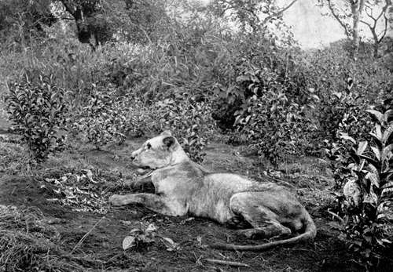

The Risks Of Big-Game Shooting. Part 7
Description
This section is from the book "Wild Life In Central Africa", by Denis D. Lyell. Also available from Amazon: Wild Life in Central Africa.
The Risks Of Big-Game Shooting. Part 7
In big-game shooting there are many indirect risks appertaining to the sport which might be considered, and possibly the worst of these is being bitten by a poisonous snake when tramping through rough bush and grass in bare legs. Personally, I cannot bear any covering on my legs while shooting in Central Africa, as putties are much too warm and they seem to prevent free action of the muscles. Gaiters are better, especially if made of cloth, but they soon get torn to bits by rough, sharp grass and thorns. Stockings, like putties, are too hot, and they do not last for any time in this country under the rough usage they are exposed to. Snakes do not seem to strike higher than the lower part of the calf; but, luckily, most of them seem to be possessed of acute hearing, and quickly glide off.
The puff adder is by far the most dangerous African snake, owing to its lethargic habits, and on several occasions I have had narrow escapes of being bitten, although I will not inflict the details on the reader, as snake stories, like fish stories, are common, and unfortunately not all true. I think I have read more bunkum about snakes than of any other living creature, and most of the really " tall" stories come from America or Australia.
It is a good plan to carry a small lancet and a small bottle or tube of permanganate of potash in the cartridge bag when shooting. There seems to be only one thing to do when bitten by a poisonous snake, and that is to immediately tie a ligature tightly above the wound, and then gash it with the lancet or a sharp bladed penknife, so as to induce it to bleed freely. Then the permanganate crystals are rubbed in after squeezing the blood out. Sucking the wound is good, but personally I would not care to allow a native to suck my blood, as their mouths are generally foul. Alcohol is often given, and particular care has to be taken to keep the sufferer moving, and on no account should he be allowed to lie down or go to sleep until some considerable time has elapsed.
I remember reading two cases of Europeans being bitten by puff adders and recovering. One was that of Mr. Frank Streatfield, who was bitten by a female puff adder on a voyage to England from South Africa. Luckily, medical aid was quickly available and he recovered, though I think he mentioned in the Field, in describing the incident, that he has never felt quite so fit since, It is certainly a reckless proceeding to handle dangerous snakes, and because a reptile does not object to being handled at one time is no assurance that it will always be in an equally docile state.
Of course the cobras and other poisonous snakes that Indian snake charmers use for public performances have been rendered innocuous by having their poison glands removed.
A small tube of permanganate is also useful for bites from wild animals, and every sportsman should make a point of carrying a little when out shooting.
I lately treated a native who was scratched by a leopard, near where I am at present living on the Bua River in Nyasaland. He was out with some natives hunting small buck and pig, and was alone on one of the flanks. The leopard suddenly jumped on his back and gave him a few scratches, and he got one rather painful gash where a claw had entered the orifice of his ear. I did not hear of the occurrence until two days afterwards, although the man was living within half a mile of my camp, and he knew he could have got medicine by asking for it. However, the natives seem to dislike appealing to white men when they are hurt or ill. On hearing of the affair, I took a basin and some medicine and went off to his hut, and he then seemed quite pleased to be treated. In less than two months he was quite sound, and if he had only come at once he would have got better in two weeks. Strange to relate, this man had had both his ears cut off for some crime, before the whites came to this country, about twenty years ago.
Natives are very touchy about any blemish of this kind, and it is considered to be bad form to make any remarks on such injuries. An old man who lives near my house was mauled several years ago by a leopard, and his wounds took over a year to heal up. Another accident occurred to an old woman, who had most of the calf of one of her legs torn off by an hyaena on a dark night. A wound of this kind must be dreadfully painful, as it is a tear and not a clean bite.
At another village, about three miles away, a lion took a woman last year (1912) and ate most of her. It then left the skull right on the top of a grave, which had a small mound over it. The superstitious minds of the natives were greatly disturbed over this weird action on the lion's part, and they firmly believe the lion was a human being who had died, and had come to life again in the guise of a lion. This idea was strengthened by the fact that a European who hunted up the lion fired several shots at it and failed to kill it. My informant, in telling me of the affair, remarked : " How could he kill a man who is bewitched ? "
In this chapter I have not mentioned anything about the natives being killed or injured by dangerous animals, and yet the list would be much longer than that of the whites who have suffered.
Lioness - Photo by G. Garden.
I have heard of a great number of natives being killed by lions, and several by elephants and leopards.
Buffaloes also have killed a few, and crocodiles very_ many.
Just after I arrived in Zomba in 1903, a native woman was killed in a village by a man-eater. I went off, very keen to get a shot at the beast, and after a walk of ten miles, or slightly more, I reached the scene of the catastrophe.
Not knowing a word of the language, I had to depend on a boy who had come with me to explain the reason of my visit. He could not speak a word of English, but he had been primed by a white man in Zomba before I left. The small headman first produced a large native mat, on which I sat down, and some native beer and a pot of fried locusts were brought to me.
Continue to:
- prev: The Risks Of Big-Game Shooting. Part 6
- Table of Contents
- next: The Risks Of Big-Game Shooting. Part 8